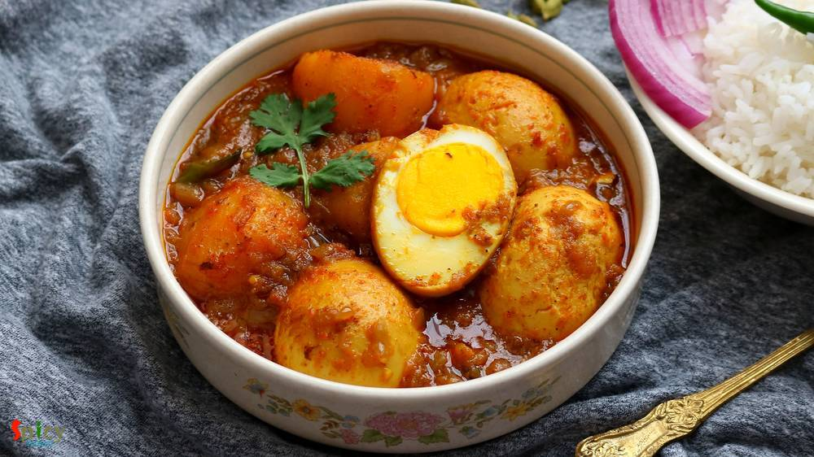
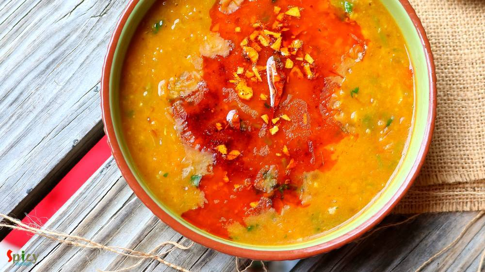
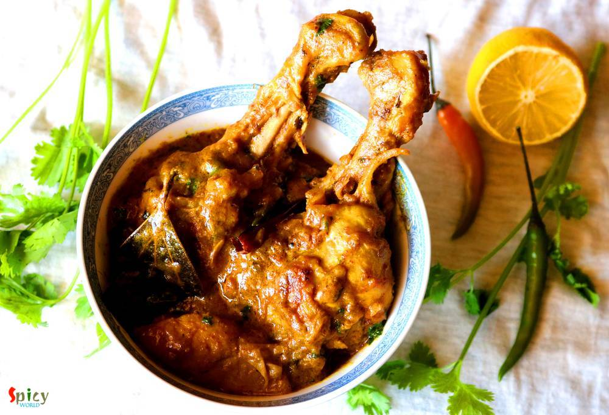
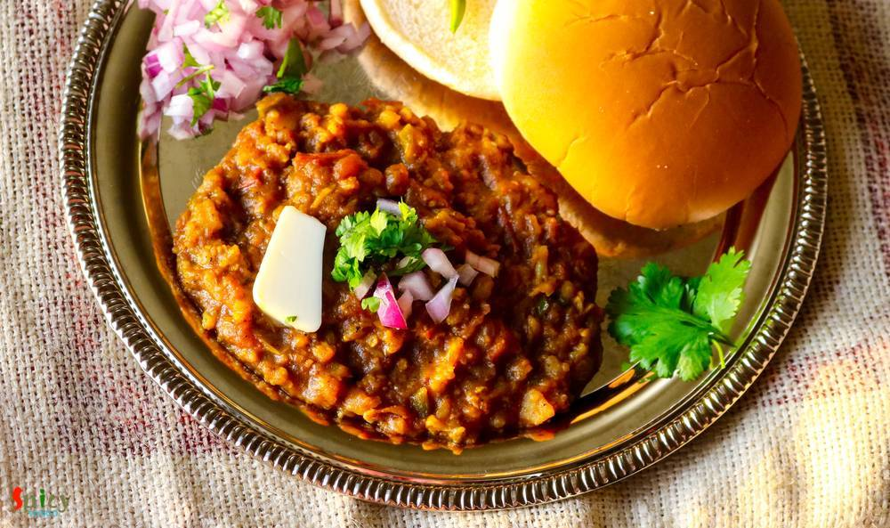
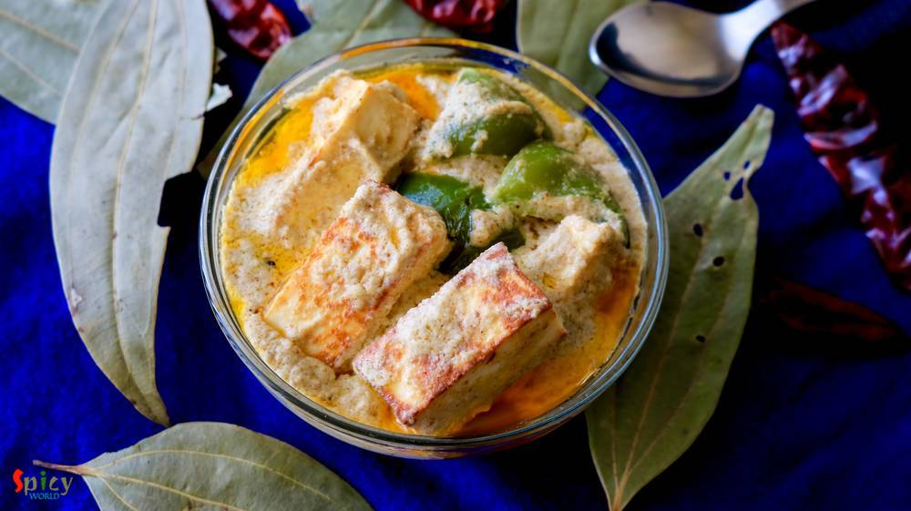
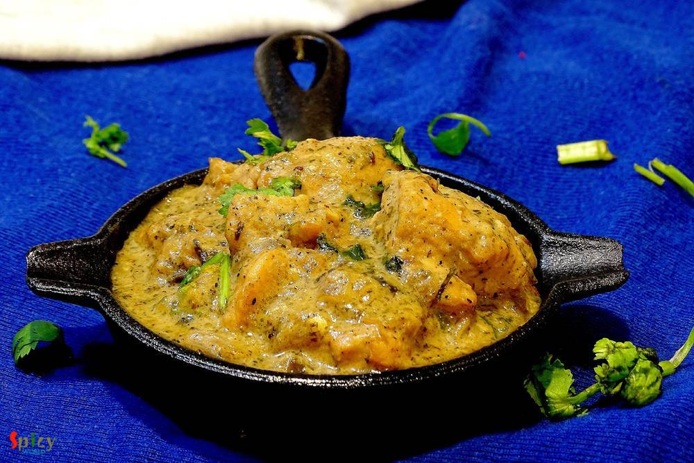
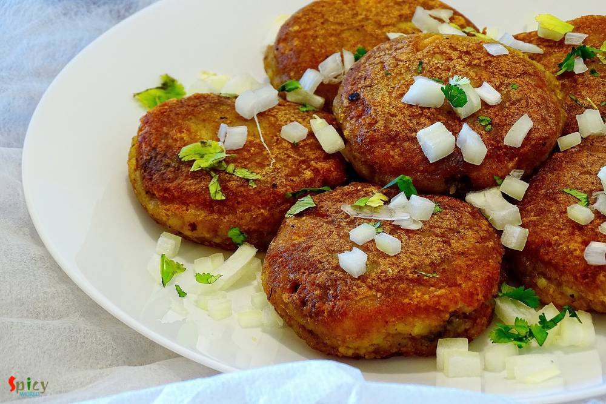

Simple and Easy Recipes

Posts on 'party'

Veg Recipe
Apr 2, 2019
Chanar Payesh is a traditional Bengali dessert recipe in which soft, crumbled panner will be cooked in semi thickened milk along with condensed milk and green cardamom. The texture of Chanar Payesh is very important - neither too thick nor too thin. In one word this Payesh tastes delicious and more over it is very easy to make. During summer, when you want to make some cold, lightly sweetened dess ...


Nonveg Recipe
Mar 29, 2019
Afghani Chicken Curry is a very flavorful main course recipe in which marinated chicken will be first shallow fried until dark brown then cooked in a thick onion based gravy. I have learnt the recipe from my friend Ankita. The Afghani chicken tastes best with plain chapati or naan or light pulao. Try this recipe in your kitchen and let me know how it turned out for you.

Veg Recipe
Mar 26, 2019
Can you imagine summer without mango? Mango is one of my favorite fruit with which you can make so many things like Yogurt, Ice cream, Phirni, Kheer, Cake, Cheesecake and what not. This season I made Mango Sondesh, taste and texture came out really good. You can make them with Ricotta cheese also, in that case add some milk powder as ricotta cheese is much thinner than Paneer. Mango pulp is going ...

Nonveg Recipe
Mar 22, 2019
We all know what Kofta is. Kofta is almost like meatball but it is deep fried and light in weight. Last weekend one of my friend came over for dinner with her family. I cooked few dishes, one of them was this Fish Kofta Curry. Deep fried Fish balls will be cooked in a rich and creamy sauce. I got very positive feedback from everybody. Fish Kofta curry tastes awesome with fried rice, plain steamed ...

Veg Recipe
Mar 19, 2019
Paneer Bhapa is a very easy and flavorful Bengali veg dish which goes best with steamed rice. Bhapa means steamed. Any spicy bhapa dish like Chingri bhapa, Ilish bhapa etc will call for two important ingredients - Green chili and Mustard oil, without these two 'bhapa' will taste bland. In this Paneer Bhapa recipe, paneer will be steamed in mustard, poppy seeds, coconut and yogurt gravy within a st ...

Veg Recipe
Mar 11, 2019
You can find so many variety of Chum Chum recipe on internet. They all taste good, I can assure you that. Today what I am going to share is Kolkata special 'Lord Chom Chom' sweet recipe, in which cylindrical shaped Paneer will be cooked in sugar syrup then they will get a good coat of thick Malai (thickened milk) and Mawa (dried milk). In one word Chom Chom = a piece of heaven. Trust me I am not k ...

Veg Recipe
Mar 2, 2019
Doi Potol is a traditional Bengali vegetarian delicacy. Potol is pointed gourd or parwal. In this recipe pointed gourd will be cooked in a spicy and tangy yogurt based sauce. I didn't use onion and garlic in this, but you can if you wish. Doi Potol goes best with plain steamed rice. I kept the recipe very simple and easy. Do try this in your kitchen and let me know how it turned out for you.
")
Nonveg Recipe
Feb 27, 2019
If you are a fish lover, then 'fish fingers' should be on the top of your list. These crispy, spicy fingers can steal your heart in one bite. In Kolkata, every street food center, college canteens, restaurants sell these lip smacking Fish Fingers with chili sauce or Kasundi. You can use any kind of white fish fillet in this recipe. Oh boy, the taste is unbeatable and unforgettable !! There are no ...

Nonveg Recipe
Feb 26, 2019
Dalna means a curry which contains potato with other vegetables or protein. But potato is a must for Dalna. Some also call it Torkari. Summer is coming and so is sweaty tiredness with it. If you don't want to spend long time in the kitchen, no worries! I have a solution. Dimer Dalna or Egg and Potato Curry is the most simple and easy recipe which can easily feed a crowd. Anyone can enjoy a good, t ...
")
Nonveg Recipe
Feb 23, 2019
I guess you all, who follow my blog, already know that we have a 'thing' for Biriyani. Be it with chicken / mutton / prawn we are always ready to enjoy. I've already posted Kolkata style biriyani recipe which is much easier than Hyderabadi style as you need to have full confidence on timing and proportions. In Kolkata we make the chicken with gravy first and then give 'dum' with cooked rice, where ...

Nonveg Recipe
Feb 14, 2019
Mutton korma is an old school and popular non veg main course item from Old Delhi. Any korma recipe has onion and yogurt based sauce, some even add nut paste also. Last weekend I had a party in my house. Among all the foods, the main attraction was Mutton Korma. Korma is very rich itself. Always serve this with light rice item or naan. Do give it a try and let me know how it turned out for you.

Nonveg Recipe
Jan 17, 2019
Sunday mutton curry is a super easy, fuss free goat meat recipe which goes best with plain rice. This mutton curry is my family favorite and almost every sunday they demand to have it on lunch. And in the evening, my husband silently ask me is there any left over from lunch so that we can have it with roti at dinner? Yes, this sunday mutton curry is really close to our heart and we love it to the ...

Veg Recipe
Jan 14, 2019
Lehsuni Daal Tadka is a spicy toor lentil preparation which has a very flavorful garlicky tempering. This daal tadka goes best with plain chapati or rice. The recipe is very simple and easy. I usually make this lehsuni daal during winter as it tastes so good and seems comfort in a bowl in those chilly afternoons or nights. Try this in your kitchen and let me know how it turned out for you.

Nonveg Recipe
Jan 11, 2019
Chicken Lollipop is one of the most frequently ordered starter item in Indian restaurants. Main trick here is to give chicken wings, lollipop shape. You can serve them after deep frying but trust me tossing the fried Chicken lollipops in spicy brown sauce will enhance the taste to another level. Do give this recipe a try and let me know how it turned out for you.

Veg Recipe
Jan 7, 2019
Koraishuti means green peas and Koraishutir Kochuri is not just a food, it is an emotion for a Bengali. According to me, winter is incomplete without 'green peas'. Am I right ?? We Bengalis love to eat 'koraishutir kochuri' during winter. In my home nobody brings this kochuri from shops. My mom always makes this at home with 'aloo dom' , 'payesh' and everybody loves it. Nowadays we don't need to w ...

Nonveg Recipe
Jan 4, 2019
Dahi chicken is a very simple yet delicious chicken curry which goes best with roti or plain chapati. Dahi or Doi means plain full fat yogurt. This dahi wala murgh has a delicious thick white colored yogurt and onion based gravy. Well, I prefer white colored doi chicken, if you like colorful then add some turmeric powder and red chili powder, rest of the recipe will remain same. You will get very ...

Nonveg Recipe
Dec 19, 2018
Mutton Handi is a delicious goat meat curry which has a scrumptious gravy and goes best with plain chapati, butter naan or pulao. Handi means clay pot. Usually mutton handi is cooked in clay pots, that's where the name came from. But I didn't have one, so cooked in my regular vessel. The taste was out of the world, soft pieces of slow cooked mutton literally stole my heart. If you are a mutton lov ...

Nonveg Recipe
Dec 6, 2018
Chicken Changezi has a rich, chatpata (spicy and tangy) and very delicious gravy which goes best with plain flatbread or naan. Changezi Chicken is a popular dish in Delhi. Almost every non veg restaurants and dhabas sell this dish. In this recipe lightly fried chicken will be cooked in a brown onion and nut based gravy and to make it chatpata, we will add chaat masala, lemon juice, green chilies a ...

Nonveg Recipe
Oct 8, 2018
Egg fried rice is a delicious variety of Indo-Chinese fried rices. It's a quick stir fry of rice, veggies and eggs with some seasonings and sauces. The best way to make Egg fried rice is by using left over rice and cooking on high flame, like many Chinese dishes. You can have this fried rice on its own or it can be paired with any manchurian gravy or chili chicken or chili paneer.

Nonveg Recipe
Nov 13, 2018
In India many dhabas and restaurants sell Keema Masala which is minced mutton curry. Keema means mince. This is a delicious non veg gravy which goes best with plain chapati or naan. In Keema Masala, minced mutton will be cooked in a onion tomato based sauce along with some flavorful spices and lots of fresh green chilies and coriander leaves. Try this recipe in your kitchen and enjoy a wonderful d ...

Nonveg Recipe
Oct 31, 2018
Egg Malai Curry is a Bengali delicacy, in which hard boiled eggs are cooked in a creamy milk based sauce. Dimer Malaikari is a very rich and mild curry which goes best with plain steamed rice or ruti. This is a kid friendly recipe, adjust the heat level according to their taste. They will enjoy this preparation to the core, I can vouch for that. If your family love egg, then you have to give this ...

Nonveg Recipe
Oct 21, 2018
Rajasthan is a state of India which is situated at the western part. In childhood I went there with my family on vacation, though I remember nothing much except our album photos. Rajasthan is the land of kings and 'laal maas', which is hot and spicy red colored mutton curry, is their well known dish. The dish is everything about color and flavors. They cook the mutton in a yogurt and onion based s ...

Veg Recipe
Oct 16, 2018
In Bengal, Durgapujo is incomplete without Ghugni. During pandal hopping one of the best selling street food after phuchka is Ghugni. Not only as a street food, on the auspicious day of Bijoya Doshomi (last day of durga pujo) Ghugni along with Nimki and Naru is served in every household of West Bengal. Ghugni is a yellow peas curry with few chunks of potato although many people add chopped fried c ...

Nonveg Recipe
Oct 4, 2018
I made this Kosha Chingri Macher Kalia last weekend with some steamed rice and curry leaves tempered musur daal. He finished the lunch (read there wasn't any meat curry, not even leftover) with a big smile, that too on weekend. This spicy prawn curry worked like a magic. So, I had to share with you all the recipe of this Bengali delicacy - kosha chingrir kalia. Though the word 'kosha' suggests slo ...

Nonveg Recipe
Sep 13, 2018
Mughlai chicken curry is a thick, nut based gravy dish from the Mughlai (awadhi) cuisine. The sauce of this Mughlai Chicken curry is very rich so you can serve this with naan, roti or light pulao. In this recipe first marinated chicken will be fried then cooked in onion, tomato gravy with lots of other flavorful ingredients. Last Saturday my family enjoyed it thoroughly, now its time for you to en ...
")
Veg Recipe
May 9, 2016
Every family has their own breakfast story. In Bengali households, 'luchi' is the common one. Sunday mornings are meant for 'luchi - torkari'. I was never a breakfast loving person, still not. Actually for me the toughest thing is time management in the morning, always hullabaloo ! But my husband is a huge fan of 'luchi' or 'kochuri', so I have to make it once or twice in a week. I have already sh ...

Nonveg Recipe
May 23, 2016
Last week I was thinking that my blog doesn't have the recipe of 'mangsher ghugni' and being a Bengali I felt very awkward. There is no Bengali in the world who doesn't know about this dish ... yes, 'mutton ghugni' is that much famous. On special occasions or guest's arrival in evening, 'mangsher ghugni' is a very common item we Bengalis make. It's a Indian version of 'chili'. We make the curry of ...

Nonveg Recipe
Aug 25, 2016
We all love to eat food from Dhaba (road side food joint) while traveling. Nowadays you can find many fake dhabas and taste of their food is also fake, nowhere close to the authentic ones. Luckily few old and original dhabas in India still sells the best meals. After tasting those foods, you will probably think that their cooks must have some kind of magical hands. I once tasted their 'mutton curr ...

Nonveg Recipe
Jun 29, 2016
Our common friend Subhodip visited our house last weekend for a dinner. He is a real foodie and have a very good knowledge about food and restaurants. So, I wanted to make something new on chicken for him and also for my blog. I have already posted 'mutton dopyaza' recipe, then I thought this time why not with chicken? Confirmed the idea with my hubby and 'chicken dopyaza' got selected for main-co ...

Nonveg Recipe
Jul 18, 2018
This dish was invented in dhabas from Himachal Pradesh. Nowadays it is available in almost every dhaba and restaurant. Its a very different recipe as it requires mutton pieces along with some minced mutton. Can you imagine that whenever you will scoop up some gravy with naan or roti there will be loads of Keema .... how delicious that sounds ! This dish goes best with Biriyani, Pulao and Butter na ...

Veg Recipe
Aug 20, 2018
I fell in love with 'daal fry' when I first tasted it at a restaurant. A big bowl of daal fry with fresh aroma of coriander leaves and few slices of naan .. very simple equation to make me happy. Yes, you read it right .. no need of non veg stuff with this kind of blissful meal. In India, I never had daal fry at home, always in restaurant. But time flies so quickly. Now I can make it by myself. I ...
")
Nonveg Recipe
Mar 14, 2019
Chicken Bharta was prepared last weekend in our lunch. The recipe is Punjabi inspired Bengali dish. A very tasty shredded (pulled) chicken preparation which is famous throughout India. It has onion and tomato based gravy with beautiful flavor of kasuri methi and Garam masala. Of course, how can I forget about the Boiled Egg? To make an excellent Chicken Bharta you have to finish it off with boiled ...

Nonveg Recipe
Apr 12, 2016
I always find immense pleasure in cooking deep fried dishes, I know they are not always healthy to eat, but then, who is watching ? I made this 'fish pokora' last month and simply forgot to post. It is close to 'amritsari fish fry' but I didn't use lots of spices, that's why they are just 'fish pakora'. You can enjoy this with chilli sauce / chutney / coke / beer. Everytime they will taste scrumpt ...

Nonveg Recipe
Sep 20, 2016
I know it's been two weeks I didn't post anything due to settling down in India, but heyy now I am back with another interesting recipe from 'dhaba' gharana. Every place has their own style of dhaba / road side food joints. Whenever we plan any short trip within Bengal, we try to make the lunch stop at some popular Dhaba. Their 'torka-ruti' and 'chicken curry' with rice are must for us. I like the ...

Veg Recipe
Aug 31, 2016
Durga puja is just a few days away. Every street of Bengal and other parts of India will be filled with people and food stalls. Among all of them 'chaat' stalls are my favourite. I like various type of chaats like panipuri, dahi puri chat, papri chat, samosa chat, nimki chat, batata puri chat, ghugni chat and so on. Though today I am not sharing any Bengali chaat, but 'pav bhaji' is quite famous i ...

Veg Recipe
Aug 22, 2016
How many of you like the smell of 'capsicum' / green bell pepper in vegetarian dishes ?? I am. Whenever I cook, specially without onion and garlic dishes, most of the time I end up adding capsicum into it ... i know it sounds stupid but surprisingly the taste becomes more yumm ! Today's recipe is about 'paneer rezala', a vegetarian mughlai delicacy, where paneer cubes are cooked in a nut based whi ...

Nonveg Recipe
Aug 18, 2016
In a rainy evening, a plate of hot, crispy popcorn chicken with a cup of tea / a glass of chilled beer can be seriously addictive! Yes today's blog is about 'popcorn chicken'. From younger to elder everybody loves this dish. This chicken recipe is very much different from 'chicken nuggets' or 'chicken pakora'. After frying them, you will get soft chicken inside and crispy coating (not breadcrumbs) ...

Nonveg Recipe
Aug 12, 2016
He bought a large packet of Tilapia fillets last week. He is a crazy fan of fish and can eat it everyday, whereas, I don't like to eat 'macher jhol' / 'mach vaja' each and every day like him. I get bored very quickly. So, this week I made these 'tandoori fish tikkas' along with some rice and simple daal. They came out delicious and also uplifted the taste of our boring lunch. I followed a very eas ...

Nonveg Recipe
Aug 8, 2016
We both adore almost any type of mutton curry. I think, once in a week, mutton curry is must for every Bengali households. I made this curry with some plain roti / chapati in dinner last month, just didn't get time to post. Now finally I am sharing this yummy recipe with you all. If you love the strong flavour of black pepper, then believe me, 'morich mangsho' is worth giving a try. I am sure your ...

Nonveg Recipe
Aug 16, 2016
Yesterday I experienced the worst ... my camera's memory card got corrupted and I lost more than half pictures of this recipe. We tried very hard to recover those photos but no luck!! It was nobody's fault, it's just that the tiny little piece of 'card' betrayed me ??? very harshly .. and I felt tremendously helpless towards 'technology'. Now you guys know why there is no step by step pictures ...
 / চিকেন কাটলেট")
Nonveg Recipe
Apr 20, 2016
'Chop - Cutlet' shops are very much available in Kolkata. You will surely find one or two shop in every street. You know how much I love fried stuff, but this one sits on top of my favourite list. 'Cutlet' means breadcrumb coated fried flat croquette. Generally in India we eat this type of fast food from street shop. After my marriage my mom twice made these chicken cutlets at home. They were scru ...

Nonveg Recipe
Jul 20, 2016
Pakistani cuisine is full of delicious surprises. Their cuisine is lot more than just kababs and biriyani. I was searching for a different 'goat meat' recipe and suddenly came across with this delicious 'peshawari mutton' recipe. Don't know whether the cooking process is authentic or not, but I really fell for its simplicity. This dish doesn't require too many ingredients even though surprisingly ...

Nonveg Recipe
Jun 13, 2016
Earlier I have shared the recipe of 'Kolhapuri Egg curry', today I am going to share the same recipe, but with chicken and some changes. One of the main ingredient in Maharashtrian cuisine is 'coconut'. We both are not too much coconut eater but when it comes to make authentic dish, I always try to make the taste as close as possible. As this is a 'Kolhapuri' gravy, you have to incorporate coconut ...

Nonveg Recipe
Jul 12, 2016
In USA, every Indian resturant serves 'chicken tikka masala' and it tastes delicious. I never had it in India, don't know why ? Tikka sized grilled chicken, onion and bell peppers are cooked in a tomato based creamy gravy. After tasting this dish several times in restaurants, last month I thought of making it at home. Few months ago I uploaded the recipe of 'chicken tikka kabab', so I am going to ...

Veg Recipe
Jun 23, 2016
After scorching heat of summer, first few days of monsoon are my favourite. In those days I don't like to stand in front of the gas for long time, because in the meantime you can enjoy the rain by sitting beside the window. I think you guys have already guessed that I am talking about one pot meal - they are so easy to cook. One of the famous one pot meal in Bengal is 'khichuri' / khichdi. I have ...
")
Nonveg Recipe
Apr 27, 2016
Bengalis love fish. We can eat fish in many forms like thick curry (kaliya), thin curry (jhol), batter fried, shallow fried (mach vaja), steamed version (vapa) and so on. One of the popular among them is 'fried fish'. Now in this category also we have so many variations. The most simple one is shallow fried marinated (with salt and turmeric) fish and the complicated one is 'Fish Roll'. In this rec ...

Nonveg Recipe
Jun 22, 2016
'Keema Aloo' is my favourite curry when it comes to a fuss free but yummy dinner. It's so rich and spicy that there is no other meat curry which you can make in such a less time. I used mutton keema but feel free to use chicken mince. After adding the cubed potatoes, this dish becomes a killer ! Serve this with plain rice or paratha, every time 'keema aloo' will be a hit. It is also a very good ma ...
")
Nonveg Recipe
Mar 30, 2016
Mutton rogan josh is the signature dish of the Kashmiri cuisine which was bought by Mughals. 'Rogan' means oil / fat and 'josh' means intense heat. The dish is an aromatic mutton curry which is cooked in oil on high flame. It is slightly different than the usual mutton curries because of the usage of some unique dry seasonings. Rogan josh can be prepared in two ways - one with onion and garlic, th ...

Nonveg Recipe
May 16, 2016
This is a very popular dish from Mughlai cuisine in India. In this recipe medium size mutton pieces are cooked in a white, creamy, nut based rich gravy. 'Rezala' goes best with naan, biriyani, roti or paratha. I have already posted several recipe on 'rezala'. The dish has a very unique taste. It is neither very spicy nor very sweet. I made this last week and thoroughly enjoyed it with plain rice. ...

Veg Recipe
May 11, 2016
'Pulao' plays a very significant role in Indian cuisine. Our cooking is mostly based upon 'curry' / gravy version which goes best with pulao. Their relationship is like - 'behind every tasty curry, there is a pulao' ... ???? You can never underestimate it because sometimes 'pulao' itself can be very rich and attractive like 'yakhni pulao', 'prawn pulao', 'sweet pulao' and so on. Today I am sharing ...

Nonveg Recipe
May 10, 2016
This chicken curry belongs to the category of 'dhaba food'. The gravy is very popular in Punjab and all over India. You can also make this dish with paneer or vegetables. The white, creamy texture of the gravy and beautiful aroma of fenugreek leaves will take you to heaven. I used boneless chicken for this recipe, feel free to make it with chicken on bone, it will be no issue. You can pair this di ...

Nonveg Recipe
Mar 26, 2016
The maincourse dishes from 'mughlai cuisine' has rich, oily, flavorful gravy and my husband is a fan of their cuisine. One of our common favorite item is 'Chicken Rezala', thick + white + rich gravy with juicy chicken pieces. I like my rezala with thick gravy but many people also like to eat thin rezala gravy. I have already shared 'fish rezala' recipe with you and now it's time for chicken. You c ...

Nonveg Recipe
May 3, 2016
Few months back I saw a recipe of this 'dhaniya murgh kabab' with boneless chicken in facebook. The picture caught my eyes and then I made my mind to give it a try. But I actually got time to make it last weekend as I already had so many recipes in my drafts and to-do list. There were few changes I make with the recipe and we both got very much impressed by it's result. Smokey flavour of any type ...
 Curry")
Nonveg Recipe
May 2, 2016
There are some recipes which are classics. They don't need any upgradation. 'Kolhapuri Egg Curry' is from this category. This is a famous Maharashtrian dish in which boiled eggs are cooked into the 'kolhapuri' gravy ... it tastes million bucks ! This curry is rich + hot in taste and goes perfectly with steamed rice or plain chapatis. You can keep a large batch of this Kolhapuri masala in fridge fo ...

Nonveg Recipe
Apr 22, 2016
Are you a garlic loving person ? I am. As chicken is my favourite protien, so I had to combine these two in one dish. 'Lehsuni Murgh' is the perfect dinner choice I made last of last weekend. The dish has very minimum spices with beautiful roasted garlic flavour. This curry can be served with naan, roti or paratha. Recipe is very simple but it tastes heavenly.

Nonveg Recipe
Apr 18, 2016
The name sounds odd ? Well, I am not crazy, we call this mutton curry vegetarian because it has no onion and garlic. The food we usually offer to our god / godess is called 'bhog' which never contains onion and garlic. During 'kalipuja' or diwali, we Bengalis make this vegetarian mutton curry with the meat of 'pathaboli' (ritual). The taste of this curry is suprisingly delicious, even if there is ...

Nonveg Recipe
Apr 15, 2016
What can I say about this one? Because again its Kabab!! This malai kabab has very smooth texture and smokey flavour. 'Malai' means cream, usually chicken cubes are marinated with yogurt, cheese, cream and some spices, I also did the same. You will be lost whenever you put that juicy, tendor piece of chicken in your mouth. I am damn sure that these kababs will make your appetite satisfy. Enjoy the ...

Nonveg Recipe
Apr 11, 2016
Chicken curry is almost regular in my kitchen and that's why I always try to do some twists with the masala, otherwise who will eat same chicken curry regularly? Nobody ! This time I made the twist with dry spices. Generally whole garam masala is used in this type of curry but I decided to go for a change and surprisingly I got the perfect taste. 'Bhuna' means koshano / in low flame you have to co ...

Nonveg Recipe
Apr 4, 2016
Cooking fried kofta / balls in a rich gravy is an old school Bengali delicacy. I guess everybody loves to eat fried balls made with paneer, vegetables, chicken, fish, mutton etc, but after soaking them in a flavouful gravy they become scrumptious. I had some fish fillets in my fridge and couldn't find any better idea than this to use them. Process of making 'Kofta Curry' is tricky and little bit o ...

Nonveg Recipe
Apr 2, 2016
It is a well known fact that we both are foodies. We are Bengali, so there is no escape from food and 'adda' (gossip). Every season, every puja and every occasion is incomplete without proper food to us. We love to do grocery shopping everyday in India. No guest can leave our house without atleast a sweet and a glass of water. So, I want to dedicate this post to them who really loves to eat and fi ...

Nonveg Recipe
Mar 31, 2016
In India "biriyani" is a very popular dish and we both are crazy about any type of 'biriyani'. You can find plenty of variations in biriyani. The process is a little bit of lengthy but the result is unbelievable. Last friday I took an attempt on making Keema Biriyani, after the entire process I realized it is the easiest one. That is why I am sharing this recipe with you because it is one of the t ...

Veg Recipe
Mar 30, 2016
I have not grown up too much of eating 'paneer' rather I grew up eating fish, chicken, rice, dal and vegetable dishes. I ate paneer in parties and very few times in restaurants. But after coming to US I learned how to make paneer at home and trust me, those self made soft white cubes gave me immense happiness. So, after that day we both have become paneer lover and have tried several dishes. This ...

Nonveg Recipe
Mar 28, 2016
Obviously they are not our regular 'aloor chop' / aloo tikki, they are something very special, aloo tikkis are stuffed with spicy minced meat, a little different from usual, but they tastes million bucks !! We Bengalis generally eat 'aloor chop' with puffed rice or tea whereas in other parts of India 'aloo tikki' is always served with chutneys. I will recommend you the second one for these stuffed ...
")
Veg Recipe
Mar 21, 2016
I have seen two types of cauliflower's roast curry from childhood, my mom makes the yellow + spicy version and the other one is white + sweet version. Both of them are my favourite but today I am sharing the recipe of second version because I have already shared a similar as 1st one cauliflower curry in my earlier post. So, in Bengal this cauliflower white curry becomes very popular during festiva ...

Nonveg Recipe
Mar 9, 2016
Ahhh, atlast I got the time to write down this particular. Made this Chicken Pizza two months ago with Makhni gravy, but the recipe is a bit long, so didn't get the time to write in one sitting. Finally I am posting the delicious pizza recipe. The main attraction here is the sauce which is makhni gravy. I know that we all are a big fan of 'murg makhni' or 'paneer makhni', then why not try this sau ...

Nonveg Recipe
Dec 23, 2015
'Dakbanglow' means roadside resting house. Travelers used to take rest or halt for a night in those houses. The care taker of those 'bunglow's cooked this curry for their guests. Nowadays these kind of recipes are almost lost but in a few restaurants in Kolkata you can still find this dish. This is a typical bengali recipe and the tastiest dish ever. Once I ate this curry in my aunt's house and I ...

Nonveg Recipe
Dec 19, 2015
You always have a grand feeling whenever you prnounce the name 'mutton biriyani'. I mean really I need to describe this? It become the most popular indian dish among the world. Biriyani has its own aroma, juicy meat and long grain flavourful rice. But in Kolkata they add boiled potato and egg in their biriyani which makes you more greedy:-) I know that the process is lenthy but believe me you will ...

Nonveg Recipe
Nov 21, 2015
When an inch of oil or ghee floats upon gravy, yes its 'mughlai nawabi dish'. 'Nawab' means king. This category of curries have nice colored, rich, thick, creamy gravy. 'Chicken Korma' is my favourite one. You can easily eat this curry once in a month along with 'biriyani', 'pulaao', 'butter naan' or 'rumali roti'. Do not put this kind of food in your regular diet because you have to make or eat k ...
")
Nonveg Recipe
Nov 9, 2015
This lentil soup is one of the traditional food in Bengal. Last weekend I had two fish heads in my fridge. I am personally not too much fond of plain fish head curry. So, I made this dish and it came out really perfect like 'biyebari'. In most of the bengali wedding this dish is must for lunch and everybody loves it. I ate the home made version of this daal twice from my mom. Those times I really ...
Contact Us
Guest Post
Subscribe RSS Feed
User Agreement
Public Presence
Feedback
Free Games
Home
Recipes
Categories
Images
Food Plating
About Me
Guest Post
Subscribe RSS Feed
User Agreement
Public Presence
Feedback
Free Games
Home
Recipes
Categories
Images
Food Plating
About Me
What we offer?
- Recipe Development
- Restaurant & Food Review
- Food Photography
- Website, Blog & Application Development
- UX / UI Designing
- Sponsorship & Advertisement
Contact us via Email
contact@spicyworld.in
Who we Are?


Amitava Ghosh
Website & CMS Designer, Developer and Architect.
Website & CMS Designer, Developer and Architect.